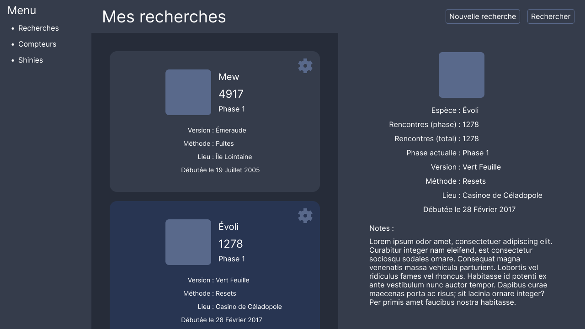
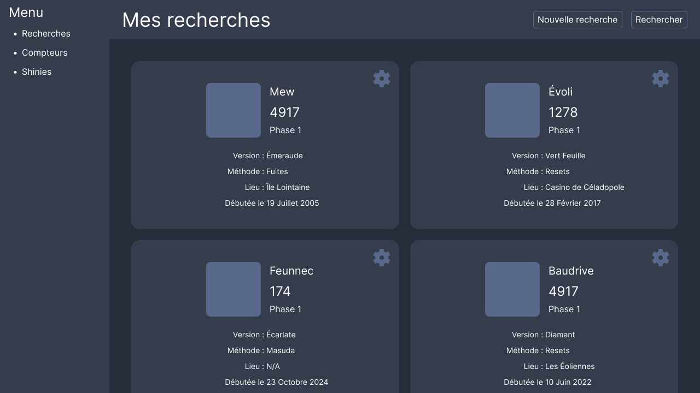
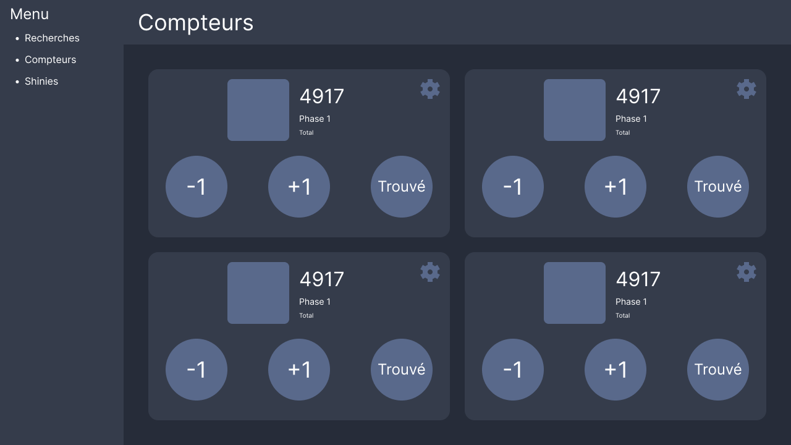

Titre du POK du temps 2
- POK
- 2024-2025
- temps 2
- rust
- GUI
- iced
- pokémon
- diesel
- orm
- Laura Vietor
Un POK traitant d'un sujet.
- Des connaissances en Rust. La bilbiothèque utilisée pour l'interface graphique fait appel à de nombreux concepts avancés, mais leur compréhension intégrale n'est pas nécessaire pour l'utiliser dans le cadre d'une application "simple" comme celle-ci.
- Figma
- Iced, la bilbiothèque utilisé pour gérer l'interface graphique.
- Diesel, l'ORM utilisé pour la gestion et le stockage des entités importantes dans ce POK.
- Qu'est-ce qu'un pokémon chromatique sur le site Pokébip, qui explique ce qu'est un pokémon chromatique et en quoi consiste la "shasse" (de "chasse au shiny", dérivé du terme anglais "shiny hunting").
Pour ce POK, je souhaite développer une application Rust permettant de suivre ses recherches de pokémon dits chromatiques, qui sont des spécimens particulièrement rares d'une couleur inhabituelle. Elle contiendra dans un premier temps une liste de ses recherches et de ses trouvailles, ainsi que des compteurs pour suivre le nombre de pokémons vus, mais j'aimerais dans le futur y ajouter plus de fonctionnalités.
Tâches
Sprints
Sprint 1
Je vais consacrer ce premier sprint à l'initialisation du projet et au design de l'interface graphique avec Figma. Ce travail me permettra également de réfléchir aux fonctionnalités que je souhaite intégrer, ce qui dictera notamment les informations que je dois stocker dans ma base de données.
- [x] Décider des bibliothèques à utiliser. Bibliothèques retenues :
- Iced pour l'interface graphique
- Diesel pour gérer les entités (recherches & trouvailles)
- [x] Designer les divers écrans :
- [x] Compteurs pour suivre le nombre de rencontres effectuées
- [x] Recherches :
- [x] Lister les recherches
- [x] Interface d'ajout de recherche
- [x] Interface d'édition de recherche
- [x] Trouvailles (lister + ajout + édition)
Sprint 2
Je vais consacrer ce second sprint à l'implémentation de l'interface graphique et des fonctionnalités "de base" (compteurs)
- [ ] Créer la base de données
- [ ] Implémenter les divers écrans de l'applications (La liste définitive est à confirmer à l'issue du sprint 1) :
- [ ] Recherches
- [ ] Trouvailles
- [ ] Compteurs
Horodatage
| Date | Heures passées | Indications |
|---|---|---|
| 18/10 | 2h | Initialisation du projet & recherche des biblios à utiliser |
| 19/10 | 1h | Implémentation d'un squelette d'application pour me familiariser avec les possibilités de la bibliothèque |
| 19/10 | 1h30 | Design général de l'application |
| 21/10 | 1h | Design de l'écran des recherches |
| 25/10 | 1h30 | Design de l'écran des recherches & de l'écran des compteurs |
| 28/10 | 0h30 | Création d'icônes |
| 30/10 | 1h | Design d'écrans (recherches & compteurs) |
| 04/11 | 1h30 | Design de l'écran des trouvailles |
| 16/11 | 1h30 | Design de l'écran des trouvailles & retour sur les autres écrans pour harmoniser |
Contenu
Premier Sprint
Le choix des bibliothèques
Pour ce projet, j'avais avant tout envie de créer une application en Rust avec une interface graphique. J'ai donc commencé par rechercher une bibliothèque pour faire cette interface graphique. J'avais quelques contraintes : je voulais faire une interface native, et je voulais pouvoir faire une application multiplateforme, qui supporterait au moins Linux et Windows. Parmi celels disponibles respectant ces conditions, mon choix s'est porté sur Iced pour trois raison : elle semblait plutôt facile d'utilisation, le paradigme employé m'a plu, et c'est la bibliothèque utilisée comme base par le projet Cosmic, un nouvel environnement de bureau (pour faire simple, un ensemble cohérent d'applications) pour Linux.
Ensuite, je dois gérer certaines données pour lesquelles un modèle relationnel m'a semblé idéal, j'ai donc cherché un ORM en Rust. J'ai trouvé en gros deux possibilités : Diesel et SeaORM. J'ai choisi Diesel parce qu'il supporte SQLite et parce que SeaORM utilise de la programmation asynchrone, avec laquelle je n'avais pas envie de m'embêter.
Maquette de l'interface graphique
Pour l'interface graphique, j'ai donc réalisé une maquette sur Figma :
  